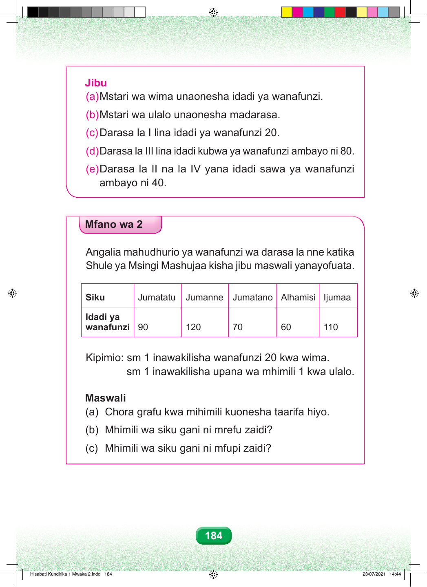

Jibu (a) Mstari wa wima unaonesha idadi ya wanafunzi. (b) Mstari wa ulalo unaonesha madarasa. (c) Darasa la I lina idadi ya wanafunzi 20. (d) Darasa la III lina idadi kubwa ya wanafunzi ambayo ni 80. (e) Darasa la II na la IV yana idadi sawa ya wanafunzi ambayo ni 40. Mfano wa 2 Angalia mahudhurio ya wanafunzi wa darasa la nne katika Shule ya Msingi Mashujaa kisha jibu maswali yanayofuata. Siku Jumatatu Jumanne Jumatano Alhamisi Ijumaa Idadi ya wanafunzi 90 120 70 60 110 Kipimio: sm 1 inawakilisha wanafunzi 20 kwa wima. sm 1 inawakilisha upana wa mhimili 1 kwa ulalo. Maswali (a) Chora grafu kwa mihimili kuonesha taarifa hiyo. (b) Mhimili wa siku gani ni mrefu zaidi? (c) Mhimili wa siku gani ni mfupi zaidi? 184 Hisabati Kundirika 1 Mwaka 2.indd 184 23/07/2021 14:44